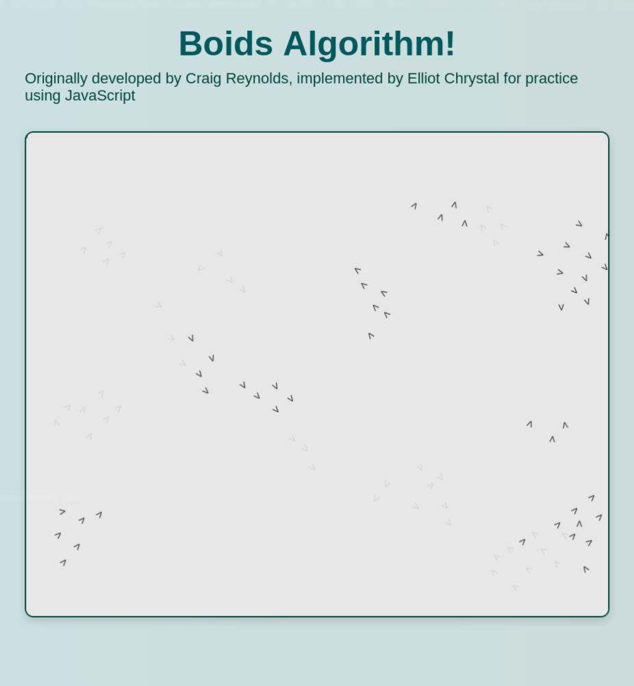

The Boids algorithm was developed in 1986 by Craig Reynolds in order to mimic the flocking and flying behaviour of birds. The name "Boid" refers to a bird-oid object, an object that can move in a way similar to that of a flock of birds.
Links
The Algorithm
The boids algorithm itself only relies on three main concepts:
- Separation: Orienting a boid away from those that are in the immediate vicinity to avoid collisions.
- Alignment: Heading in the average direction of those in the vicinity.
- Cohesion: The preference to move toward the center of mass of those in the vicinity.
The combined effect of these three simple rules results in emergent behaviour that looks surprisingly like a complex, living flock.

Context
I wanted to try a project in Javascript just to get more familiar with the language, as it does not always agree with me. This was a way for me to practice a bit. You can find the link for the Github page above, and you can also find the demo link to run the boids simulation for yourself!
(Note: Try resizing the window and refreshing to see how the boids change behaviour based on the initial density.)